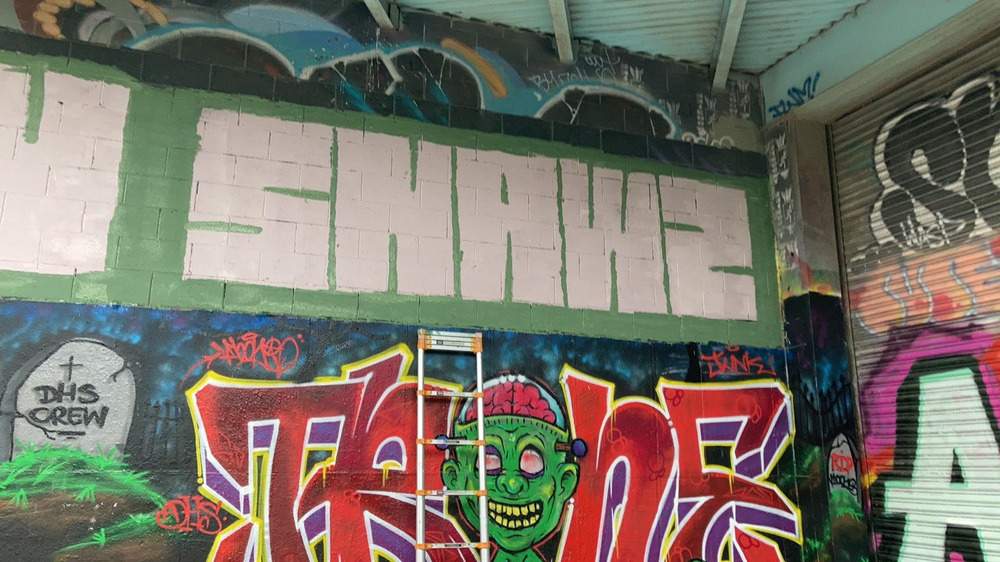

I started getting an interest in graffiti when I was in sophomore year of high school. I really liked walking home and always seeing different names and different styles portrayed in the buildings. I didn't know anyone who has done graffiti, and i didnt know exactly what to expect. I started off by think of a name, something unique but something I was already familiar with. I came across this movie from my childhood called "Willy Wonka and The Chocolate Factory"(1971). There is this scene in the movie where Wonka shows the kids fruit wallpaper, you are able to lick it and taste like the fruit. Wonka later goes and says "Try some more, the strawberries taste like strawberries, the SNAWZberries taste like SNAWZberries." This is how I got my name. SNAWZ
I usually like using paint markers on old vinyls to write my name. I want to learn how to do animal portraits. I'm having a bit of a hard time with charcoal pencils, thats one of my goals this year is to better my skills in drawing with charcoal.
Now, I don't really do alot of art, except in the weekends, I meet up with my friends and paint permission walls to practice our spray paint techniques. In the future I hope to do a mural in my community. This is a hobby I plan to keep for a long time.
Something that has really caught my eye is the study of plants and the use of herbs. I plan to further study my cultures herbal techniques as a way to connect with my roots. When I went Mexico, my dad and my stepmom opened a path i would've never thought i would be intrigued to. They showed me herbs that were used to protect us from people being envious from us, we call this the "evil eye."